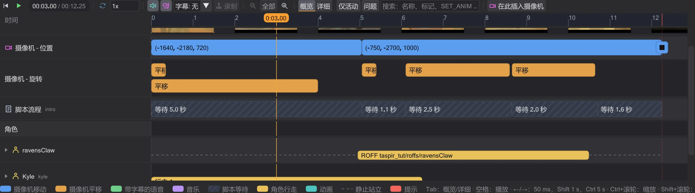
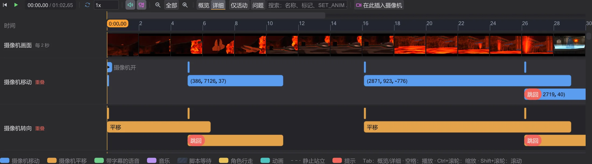
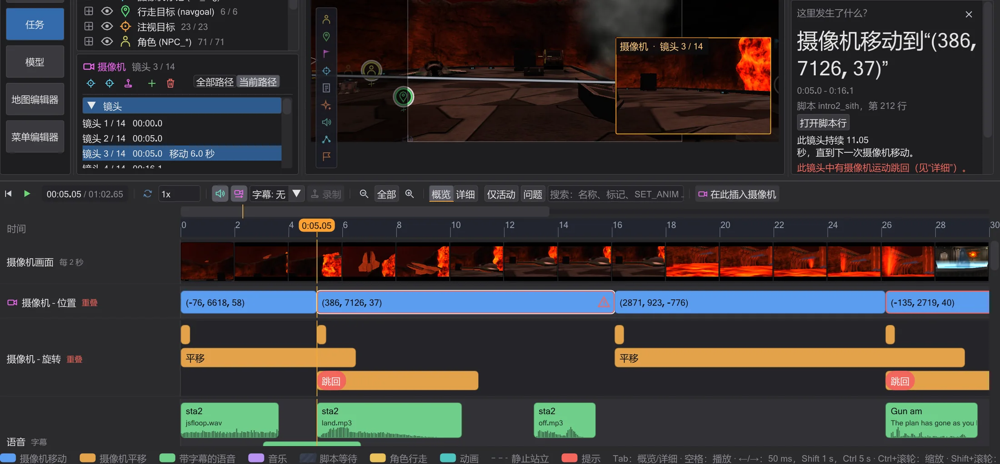
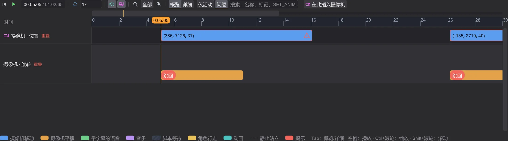
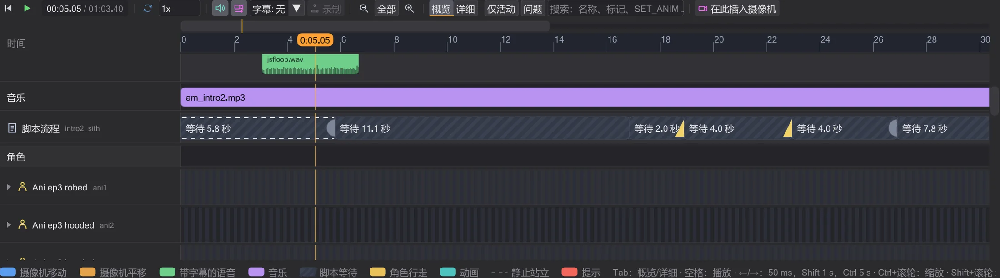
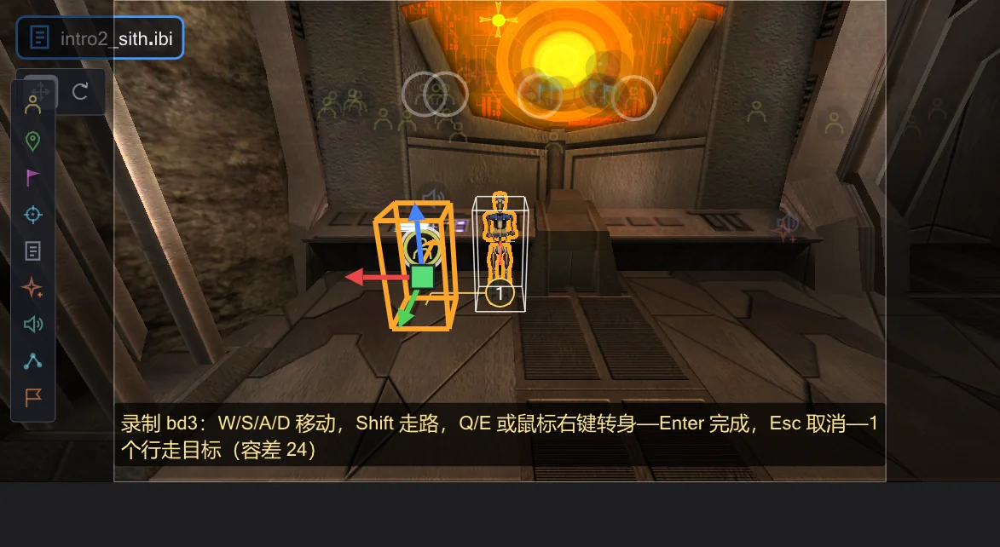
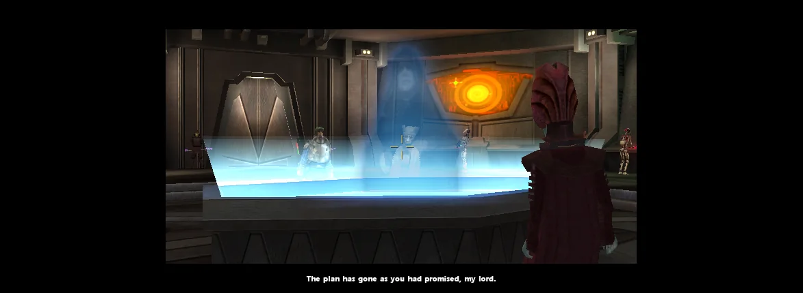

时间轴
时间轴播放场景并显示何时发生什么——带名称的摄像机镜头、带字幕的语音、音乐、脚本的等待以及每个角色。单击一个块，侧栏会解释它；拖动它，脚本随之改变。

播放与浏览#
地图下方的播放按钮（▶）用于开始和停止；鼠标位于时间轴上时，空格 作用相同。在标尺上单击或拖动可设置时间——3D 视图显示该时刻的场景。左 / 右 移动一个游戏帧（50 毫秒，游戏逻辑的时间网格），按住 Shift 移动一秒，按住 Ctrl 移动五秒，Home 跳到开头。各行下方的图例列出了这些按键。速度框可放慢场景（声音仅在 1x 时播放），循环 循环播放。字幕 按游戏的方式（游戏设置 g_subtitles）在预览画面中显示字幕：摄像机脚本开启时显示在下方黑条中央，每次两行，每对显示的时间与其字母占用的声音时长相同；Movie Duels 以较小的尺寸绘制（cg_textprintscale，默认 0.66）。与游戏相同，Jedi Academy 和 Movie Duels 默认不显示，Jedi Outcast 在过场动画中显示，设置了 SET_USE_SUBTITLES 的角色总是显示其台词；SET_CAPTIONTEXTCOLOR 改变颜色。
场景以约 30 秒的范围开始。全部 显示整个场景，− 和 + 缩小和放大，Ctrl+滚轮以鼠标指针为中心缩放，Shift+滚轮滚动。只有放大时，标尺上方才会出现一条简洁的导航栏，显示你看到的是场景的哪一部分——单击或拖动即可移动到那里。
与游戏一致的声音#
预览会像游戏一样播放场景中的声音。声音从视图所显示的摄像机处听到——播放时即脚本摄像机。每个声音每帧都会重新调整:摄像机远离时声音变小,切到别处时,那里的声音变得可闻。在听觉范围外开始的台词会静音继续播放。与游戏一样,只有摄像机可能看到的声源(其 PVS 内)才会让光剑嗡鸣、扬声器循环、门和特效发声;语音、ROFF 注记声音和破碎声总能听到。不可见的 NPC 点燃光剑时没有声音——点燃声在它出现时才响起。音量遵循游戏默认值(特效 0.5、语音 1.0、音乐 0.25),可在 编辑 → 首选项 中更改。声音只在 1x 速度下播放。
sound 注记:在 Movie Duels 规则下停留在起始位置,在 OpenJK 规则下随角色移动(首选项)。在 OpenJK 规则下,一个 ROFF 帧的所有注记都会触发(Movie Duels 和 Jedi Outcast 只触发第一个),loop sfx <声音> 让实体播放循环声音,直到 loop sfx kill;USE <脚本> 注记会在该实体上启动这个脚本,loop rof absolute|relative 会像游戏中一样重新开始路径(此时 play 的任务永不结束,对它的 dowait 会一直等待)。概览与详细#
概览 让你一眼看清场景：摄像机 – 位置 每个镜头一个块，从一次摄像机移动到下一次，以其标记命名（或显示为易读的坐标）；摄像机 – 旋转 显示平移，没有时长的平移标记为切换。语音 中每句话与其声音文件一样长，带说话者、来自游戏文本文件的字幕（Jedi Academy 和 Movie Duels：strings/english/<地图>.str，Jedi Outcast：strip/<地图>.sp，包括某些地图读取的附加包）和波形。音乐 显示从何时起播放哪首音乐。脚本流程 把脚本的等待显示为带斜线的块并标明在等待什么，把命令显示为带标签的标记；切换地图是红色标记。每个角色一行：上方是有意义的动画及其名称，下方是编号的行走，静止站立处为虚线，不可见处为斜线。名称旁的箭头可展开 动画 和 命令。

详细（或在时间轴上按 Tab）把摄像机分为移动、平移、缩放和淡入淡出，并把视野和淡入淡出画成线。两条命令之间它们是直线，因为游戏按线性插值——没有缓动曲线。如果一个摄像机运动在同类的上一个结束之前就开始，它会获得自己的轨道和红色提示 跳回：游戏只在运动结束时才采用位置和角度（cg_camera.cpp），所以新的运动从上一个开始的位置算起——摄像机会跳回。
这里发生了什么？#

单击任意块或标记：时间跳到那里，脚本中选中对应行，脚本栏下方的 这里发生了什么？ 框用通俗的话说明它做什么——摄像机移向何处、用多久，谁说哪句话，wait 在等什么、谁发送该信号，哪个动画播放多久。打开脚本行 会在编辑器中打开该命令。来自其他脚本（run、use、spawnscript）的命令会给出那个脚本及其中的行——打开脚本行 会打开那个脚本并选中该行；由模拟插入的命令没有对应行。
筛选与搜索#
仅活动 隐藏在可见范围内没有动作的角色。问题 只显示有提示的位置：会跳回的摄像机移动、预览尚未模拟的命令、切换地图。搜索框可按名称、标记、文件、字幕或命令筛选（例如 luke、cam1b、SET_ANIM）。

拖动以修改时间#
向左或向右拖动摄像机块或一句台词：它前面的 wait 会改变，它提前或推迟发生，其后的一切随之移动；按住 Alt 时，它后面的 wait 缩短相同的量，其余保持不动。拖动摄像机块的右边缘可改变其时长，拖动等待块的右边缘可使其变长或变短。台词保持其长度——即声音文件的长度。行走无法拖长或缩短：其时长来自寻路和角色速度。一切都对齐到游戏的 50 毫秒帧，拖动时会有提示说明脚本中将改变什么。

每次拖动都会把数值写入脚本（注释和格式保持不变），并且恰好是 Ctrl+Z 的一步——撤销后脚本逐字节恢复原样。
录制行走#
在视图或其行中选择一个角色（NPC），然后按传输栏中的 录制：从播放头的时间起你在预览中操控它——W/S/A/D 移动，Shift 走路而不是奔跑，Q/E 或鼠标右键转身。它使用游戏的移动代码（Pmove），以其 .npc 文件中的速度移动，并会撞到地图的墙。摄像机跟随角色。其模型的动作与游戏一致：双腿按游戏的选择奔跑、行走或后退，朝移动方向最多转 60°，同时上身保持朝前；动画之间平滑过渡，上身的武器姿势或保持的动画会保留；路径会被绘出，带编号的圆圈就是将要写入的行走目标。完成（Enter）写入，取消（Esc）不做任何更改。

角色在斜坡或台阶上静止站立时,会像游戏中一样放脚(斜坡腿部动画,每 100 毫秒一级);持光剑时,上半身按游戏的判断摆出战斗姿势或跟随双腿(PM_TorsoAnimLightsaber)。
写入的是游戏让 NPC 行走所用的方式：每个点一个 ref_tag 和一个 set ( SET_NAVGOAL, ... )（在游戏中会等到角色到达），步态改变处在其前面加 SET_RUNNING/SET_WALKING。只在需要的地方保留点：路径偏离直线超过容差（单位，录制时可调）处、直线会撞墙处以及步态改变处。命令在播放头的时间写入角色自己的命令中（若没有则新建 affect 块）——Ctrl+Z 一步即可撤销。之后预览按游戏的方式行走：点与点之间 NPC 以自己的速度自行寻路——游戏不知道每段的时间，因此录制只确定点和步态。

wait 比写入值晚一个游戏帧（50 毫秒）结束，dowait 会等待它指定的任务。预览尚未模拟的命令（例如 camera ( TRACK ) 或 print）显示为红色标记，而不是猜测。适用的规则（OpenJK 或 Movie Duels）按 首选项 中的设置。